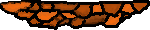
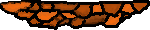

Congratulations.
You have found the potato, and saved the world.
It took you
seconds and cost the world the equivalent of $
.
You are a true winner, by costing less than $1k.
You know you can do better.
Play again?
Tutorial, part 1
You control a fairy with mouse. The fairy can fly, but loses hitpoints from colliding with walls. Also, because the legendary potato got stolen, the fairy is shungry. Get to the potato before you starve to death. You are a minimalist, and so you vow not to collect items, kill enemies, or eat meat.
This is a tripod monster. Equipped with a magical gun to protect the stolen potato, so other people don't steal it. They stand still on the ground, waiting until an intruder comes close, then they fire a quick burst of bullets.
This is a weapon, that can be used to get rid of enemies. Simply get close to them, and click the left mouse button to throw magical lightning. You can eat killed enemies to restore some lost health by hovering over them.
Continue
Tutorial, part 2
This is an imp, they are used as soliders for their cheap price. They actively run close to you, and they fire more accurately than the tripods. At least they can't durvive as much punishment as the tripods.
These checkpoints let you save progress, you revive at the last checkpoint visited.
Continue
Story:
Once upon a time, something has happened. The potato has disappeared. The most important potato in the world. You have to get it. At any cost.
Back

 
